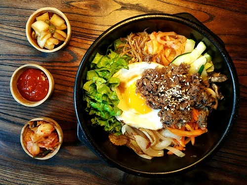

Bibimbap

Bi-bim-bap means mixed rice. Culturally it means you mix the rice. Bibimbap is a bowl of steamed rice topped with an assortement of stirfry vegetable.This can be eggplant, spinach, carrots, mushrooms, and the list goes on. The dish is mixed thoroughly just before eating.
Ingredients
- 1 tbsp minced garlic
- 1/2 tbsp soy sauce
- 1 tsp sesame oil
- 1/2 tsp sugar
- black pepper
- salt
- 1 carrot, julienned
- 1 zucchini, julienned
- 1/2 cabbage, julienned
- 1 bag baby spinach
- cooking oil of choice
- toasted sesame seeds
- 1 bowl steam rice
Directions
- Wash and cook spinach in boiling water for 30 seconds.
- Drain, squeeze, and place in a bowl
- Add 1/2 tsp sesame oil and sprinkle toasted sesame seeds. Mix well.
- Mix sauce. Add to a bowl, soy sauce sesame oil, and sugar. Mix well.
- Stir fry carrots, add salt and black pepper. Cook 2-3 minutes.
- Place in a bowl.
- Add 1/2 tsp sesame oil and sprinkle toasted sesame seeds. Mix well.
- Stir fry zucchini, add salt and black pepper. Cook 1-2 minutes.
- Place in a bowl
- Add 1/2 tsp sesame oil and sprinkle toasted sesame seeds. Mix well.
- Stir fry cabbage, add salt and black pepper. Cook 1-2 minutes
- Place in a bowl.
- Add 1/2 tsp sesame oil and sprinkle toasted sesame seeds. Mix well.
- Brush sesame oil in serving bowl, add rice. Top the rice with the assortment of vegetables in a clockwise rotation.
- Top with toasted sesame seeds and serve.